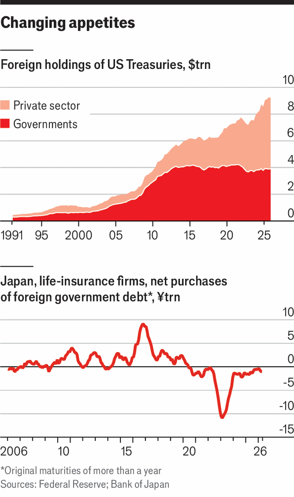

Foreign demand for American government debt is becoming much less reliable
A once-vital source of funding for the Treasury market is drying up
June 4th 2026

In 1974, soon after the first oil shock, William Simon, America’s treasury secretary, flew to Jeddah to sign a secret deal with the king of Saudi Arabia. Among other things, he promised the Saudi government preferential access to American Treasury bonds. In exchange, the regime agreed to invest some of its immense oil revenue in American public debt.
Three years earlier Richard Nixon had ended the dollar’s convertibility to gold, ushering in an era of floating currencies. Central banks found themselves having to manage exchange rates. Foreign states stocked up on Treasury bonds in part to stop their currencies from appreciating against the dollar. America’s government needed foreign buyers, too: the more customers for its debt, the lower the interest it had to pay.
America’s financial bureaucrats offered a sweet deal: the chance to bid for Treasuries at private auctions, with favourable tax treatment. Although the Saudis never became big buyers, foreign states bought $2.3trn of Treasuries in the 2000s, bringing their holdings to $2.9trn, after currency crises convinced Asian governments in particular that they needed stockpiles of dollar-denominated assets. If their currencies started sliding, the logic ran, they could stem the decline by selling Treasuries to buy domestic assets.
The largest stash was in China, which at its peak in 2013 owned $1.3trn in Treasury bonds. They were mostly held by the People’s Bank of China, which used purchases and sales of American government bonds to manage the value of the yuan. Many other countries did the same. In 2008 the share of American federal debt held by foreign governments peaked at 38%.
These purchases were a big boon. Among the largest estimates of their effect comes from Rashad Ahmed of the Andersen Institute, a think-tank, and Alessandro Rebucci of Johns Hopkins University. They suggest that an unexpected $100bn investment by a foreign government can lower ten-year Treasury yields by a percentage point when it occurs, declining to about half a percentage point after a year.
What is more, foreign governments do not invest in Treasuries to make money, by and large. They want dollar assets simply as a precaution, to help defend their currencies if need be. That makes them an enviably staid, dependable source of funding.
However, for almost 20 years, the role of foreign governments in the Treasury market has been slowly shrivelling. They now hold just 13% of Treasuries, the lowest share in 30 years. In part, that reflects central banks’ diversification. The dollar’s share in global foreign-exchange reserves has slipped from 71% in 2001 to around 57% last year. Some of the drop stems from the long-term strength of the dollar, since central banks tend to buy dollars when they are cheap and sell when they are expensive, to keep their currencies from appreciating or depreciating too much. But the fall is also a function of the broader range of currencies central banks now hold. Their hoards include more Swiss francs and Canadian dollars these days, in addition to their stash of euros, yen and pounds.
Foreign central banks have also become more hesitant to invest in Treasuries after witnessing the freezing of the Russian central bank’s foreign assets in the wake of Russia’s invasion of Ukraine. “It’s a Rubicon that’s been crossed,” says a member of the Treasury Borrowing Advisory Committee, a private-sector panel that advises the Treasury. “They’re afraid of the US government effectively confiscating their assets.” In a survey last year by UBS, a Swiss bank, 49% of reserve managers expressed concern about the weaponisation of foreign-currency reserves, up from 14% in 2023.
That fear has driven some central banks to hold more reserves in gold instead. Since 2022 they have bought about 1,000 metric tonnes a year, on average, twice their purchases over the previous decade. Russia’s and Turkey’s central banks have been selling gold to weather the financial turmoil from the war in Iran.
The biggest reason for the fall in central banks’ share of Treasuries, however, has been the enormous expansion in the Treasury market. Over the past decade the world’s stock of foreign-exchange reserves has grown by a little more than $2trn; America’s federal debt has grown by $17trn. Even if every penny of new reserves had been held in dollars, America would still have needed to find lots of new customers for its debt.

Since 2023 foreign commercial investors have had bigger holdings of Treasuries than have foreign governments. They now own a little more than $5trn-worth, or about 17% of the market (see chart). Last year alone they added $545bn to their stash.
But private investors, naturally, are far more interested in returns than governments, and so make far more capricious investors. For most of the past 15 years, yields on Treasuries have been higher than on their equivalents in Britain, continental Europe and Japan, which generated prodigious appetite for American debt. That is no longer quite so true. Rising long-term yields have made government bonds elsewhere in the world an increasingly competitive alternative.
Some private investors are already cutting their holdings of Treasuries. Alecta, a Swedish pension fund with more than $180bn in assets, began selling its Treasuries in waves at the beginning of 2025, citing America’s swelling national debt. Denmark’s AkademikerPension announced a similar decision to sell its modest holdings earlier this year. Degroof Petercam Asset Management, a Belgian firm, has also sold its holdings, citing vague concerns about valuation.
Japan’s life-insurance firms provide an example of how quickly investors can lose a ravenous appetite for bonds. Between 2010 and 2019 they bought over 29trn yen ($280bn by exchange rates during that period) in foreign bonds (mostly American corporate and government debt). But since 2020 they have sold a net 20trn yen, with particularly large sales in 2022, when the Federal Reserve’s rapid series of rises in interest rates drove up the cost of currency hedging for Japanese investors. For the insurers, whose liabilities are all in yen, owning American bonds no longer made sense.
There are other reasons to believe that broader demand for Treasuries from the private sector abroad may be ebbing, especially where the longest-dated debt is concerned. “Arguably, ageing populations and declining fertility rates reduce the need for life-insurance products,” notes Thomas Mathews of Capital Economics, a consultancy. Demand for life insurance tends to come from people of working age with dependent children. More old people and fewer children may, therefore, presage lower demand.
The shift among foreign buyers of Treasuries from unexacting central banks to commercial investors focused on returns suggests that demand for American debt will become more sensitive to price. To continue to attract buyers, yields will have to be higher than in the past, driving up the bill for American taxpayers. ■